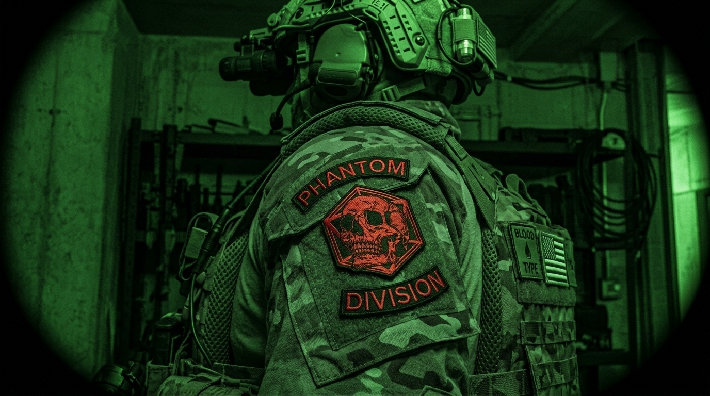
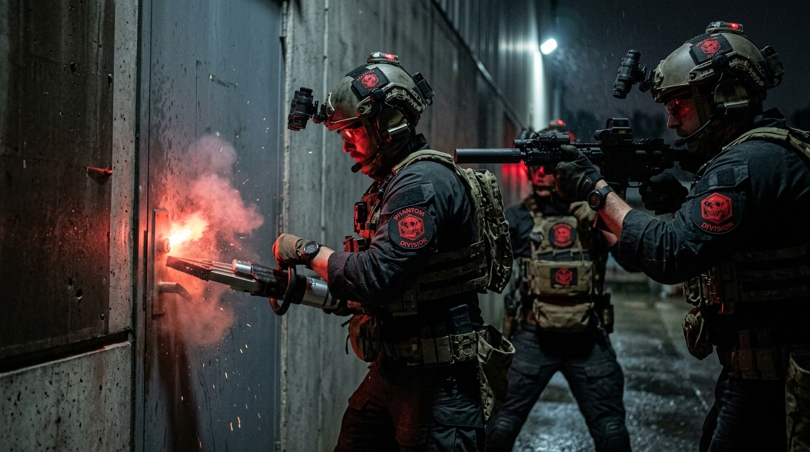

CLASSIFIED DIVISION
Covert Operations & Special Intelligence
Classification Notice — RESTRICTED
The Phantom Division exists outside Kairon's standard operational framework. Its existence is acknowledged here in the strictest confidence. All operational details, personnel rosters, and mission records are classified at a level above this disclosure. Access is granted exclusively on a need-to-know basis authorised by the Chief Executive.
About the Division
The Phantom Division was established in 2018 as a direct response to the emergence of threat actors operating in the grey zone between conventional crime, corporate espionage, and state-directed interference. No existing Kairon unit — nor any competitor offering — had the mandate or methodology to operate effectively in this space.
Phantom operatives are recruited exclusively from former intelligence agency officers with covert operations backgrounds. Their identities are not disclosed to clients, their movements are not logged in standard operational systems, and their methods are not subject to the same accountability frameworks that govern Kairon's conventional divisions.
The division operates under a separate legal entity and jurisdiction framework, accessible only through a formal referral from a sitting Kairon client with an existing top-tier engagement. Phantom does not accept cold enquiries.
Mission
Phantom exists for a single purpose: to resolve threats that cannot be resolved through conventional means. When the stakes are existential and the operating environment places standard methods out of reach, Phantom is the answer.

Approach
Phantom operates exclusively in darkness — operationally and metaphorically. Deployments are never acknowledged, client identities are never associated with Phantom activity, and outcomes are delivered without attribution.
The division's approach integrates human intelligence, technical collection, and direct action capabilities in a manner that leaves no forensic or legal exposure for the client. Every Phantom engagement begins with a threat analysis that maps the complete adversarial ecosystem before any operational planning commences.
Phantom does not operate within the borders of the United Kingdom, European Union, or the Five Eyes nations. All activities are conducted in full compliance with the legal frameworks of the jurisdictions in which the division operates.
Capabilities
Human and technical intelligence gathering operations against threat actors operating in denied or contested environments.
Strategic information operations designed to neutralise hostile narratives, protect reputations, and alter adversarial decision calculus.
Recovery of persons, data, financial assets, or physical property in environments where conventional legal and security channels have failed.
Disruption and permanent degradation of threat actor capabilities through means that cannot be detailed in this document.
Emergency extraction and identity security programmes for principals facing imminent personal threat in jurisdictions without rule-of-law protection.

Engage Phantom
The Phantom Division does not accept direct public enquiries. If you believe your situation warrants Phantom involvement, contact Kairon through our standard channels and request a confidential senior-level assessment. Eligibility will be evaluated without disclosure of Phantom's existence to any party not already cleared.